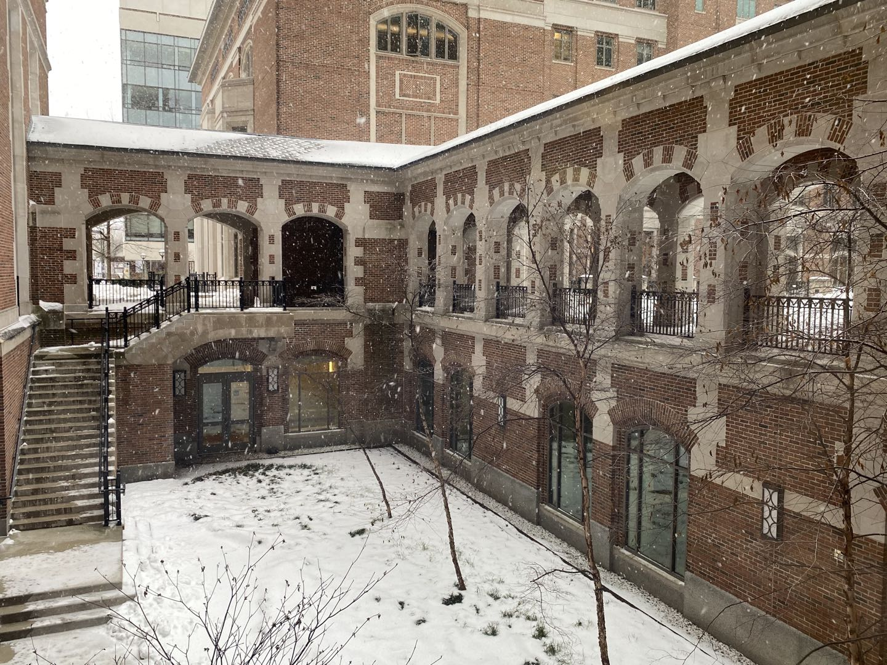
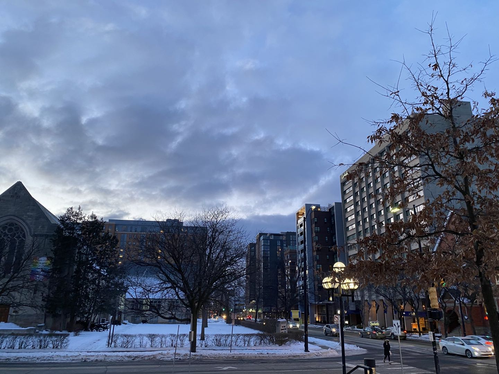
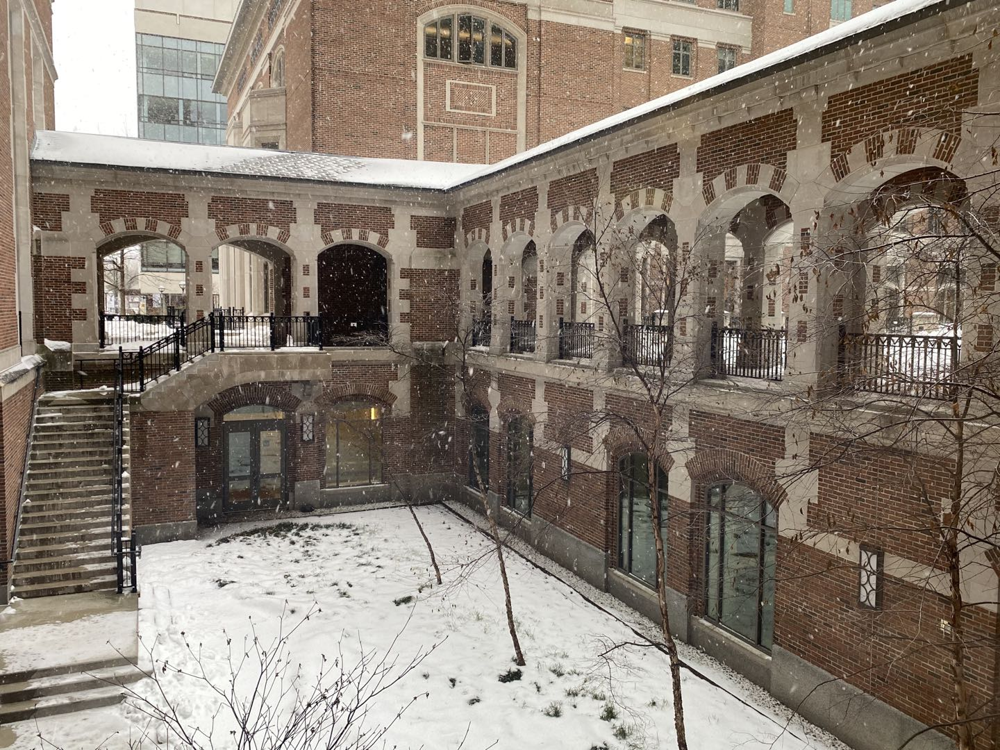
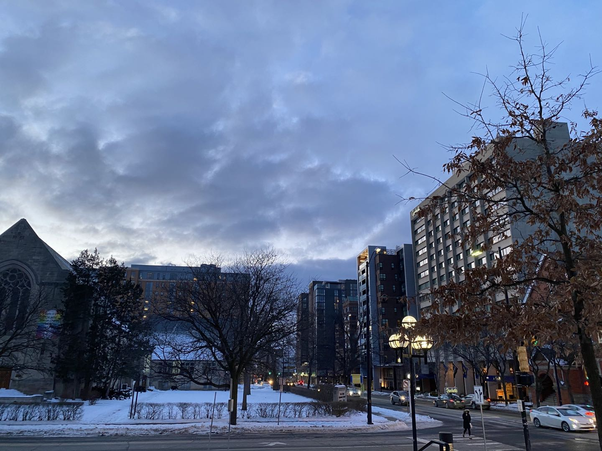

My Education Experience
I was born in Shanghai, which is one of the most developed cities in China. Shanghai is a very beautiful and modern city. I had lived in Shanghai since I was born for about 20 years. After I graduated from college, I went to the United States to pursue my master's degree. If you want to know more about my education experience, you can read this page. All the experiences are listed in a chronological order.

Shanghai Jiao Tong University (2016 - 2020)
I was majoring in Electrical and Computer Engineering (ECE) in my undergraduate study here. Professors taught classes in English so we had a good environemnt to practice our English.
Major Courses: Programming & Elem. Data Structures, Introduction to Operating Systems, Probabilistic Methods in Engineering, Introduction to Computer Networks and etc.
Travel to UM
 



University of Michigan - Ann Arbor (2019 - 2021)
University of Michigan is a very prestigious university. My major is data science in the school of Information. We are provided with the freedom and various opportunities to choose whatever courses we are interested in.
Major Courses: Natural Language Processing, Information Retrieval, Database Management Systems, Database App Design, Machine Learning, Algorithms and etc.